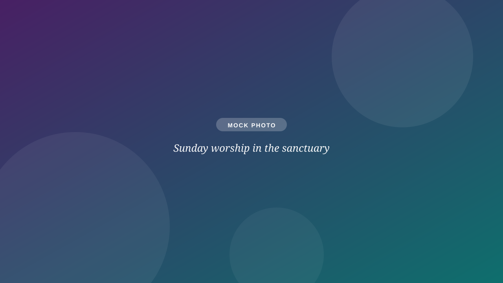
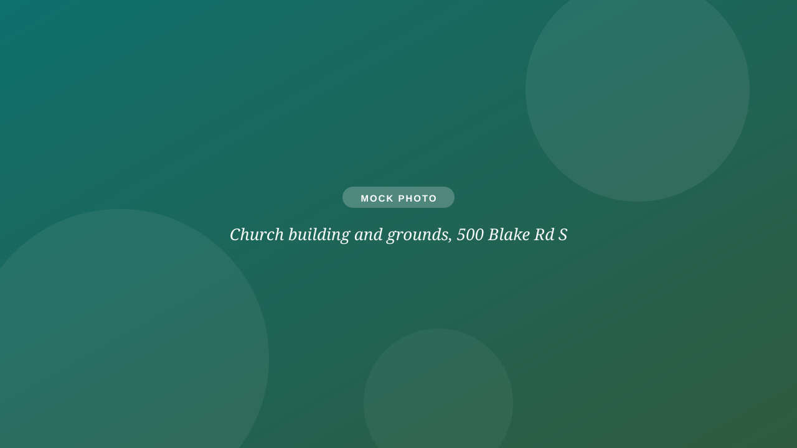

Member Portal
Update your contact info, view your giving history, and manage your household record in Servant Keeper.
Open the portalMembers
No more hunting through old emails. Portal, directory, newsletter, giving, and volunteer sign-ups: the member essentials live on this page.

Update your contact info, view your giving history, and manage your household record in Servant Keeper.
Open the portalFind fellow members and their contact information. Login required, members only.
Open the directoryOur quarterly newsletter: ministry updates, council news, and stories from the congregation. Archive back to 2020.
Request the archiveSet up or adjust recurring giving, make a one-time gift, or ask about your pledge statement.
Go to givingGreeter, lector, coffee host, sound tech, and more. Contact the office and we'll get you on the schedule.
See the rolesThe weekly email carries the bulletin, announcements, and Zoom links. Not getting it? Let the office know.
Subscribe or fix deliveryCongregation business
Upgrading sanctuary audio-visual for accessibility and online worship. Congregational input sessions and the RFP are available from the office.
Exploring converting the vacant parsonage into housing for young adults facing homelessness, with congregational conversation before any vote.
The Evaluation chair and Lay Ministry Call Committee currently have openings; talk to President John Owens if you're curious.
Office & records
Membership records, pledges, room scheduling, and the answer to almost any question.

The best growth plan a small church has ever had: members who say "come sit with me." Send someone the Plan a Visit page. It does the explaining for you.